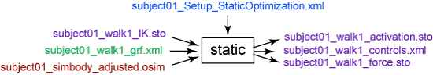

Static optimization is an extension to inverse dynamics that further resolves the net joint moments into individual muscle forces at each instant in time. The muscle forces are resolved by minimizing the sum of squared (or other power) muscle activations.
To launch the Static Optimization Tool, select Static Optimization… from the Tools menu. The Static Optimization Tool dialog window, like all other OpenSim tools, operates on the current model open and selected in OpenSim.
Overview
The figure below shows the required inputs and outputs for the Static Optimization Tool. Each is described in more detail in the following sections.

Inputs and Outputs of the Static Optimization Tool. Experimental data are shown in green; OpenSim files (.osim) are shown in red; settings files are shown in blue; files generated by the workflow are shown in purple. To run static optimization, you use the analyze command.
The file names are examples that can be found in the examples/Gait2354_Simbody directory installed with the OpenSim distribution. |
Inputs
Three files are required as input by the Static Optimization Tool:
subject01_walk1_ik.mot: Motion file containing the time histories of generalized coordinates that describe the movement of the model. This can be kinematic data (i.e., joint angles) from IK or states (i.e., joint angles AND velocities) from RRA for the time range of interest.
subject01_walk1_grf.xml: External load data (i.e., ground reaction forces, moments, and center of pressure location). Note that you must measure or model all external forces acting on a subject during the motion to calculate accurate muscle forces. The .xml file describes how to apply the measured ground reaction forces to the model during the analysis.
subject01_simbody.osim: A subject-specific OpenSim model generated by scaling a generic model with the Scale Tool or by other means, along with an associated marker set containing adjusted virtual markers. The model must include inertial parameters (segment masses, etc.).
x: The exponent for the activation-based cost function to be minimized (i.e., the criterion used to solve the muscle force distribution problem).
Outputs
The Static Optimization Tool generates three files in a specified folder:
subject01_walk1_StaticOptimization_controls.xml: Contains the time histories of muscle activations. These controls were minimized by the Static Optimization Tool.
subject01_walk1_StaticOptimization_activation.sto: Storage file containing the time histories of muscle activations.
subject01_walk1_StaticOptimization_force.sto: Storage file containing the time histories of muscle forces.
Best Practices and Troubleshooting
Static Optimization Settings:
- You can use IK or RRA results as input kinematics. If using IK results, you usually need to filter them, either externally or using the OpenSim analyze/static optimization field; if using RRA results, you usually do not have to filter.
- For gait and many other motions, you need to add (append) residual actuators to the first free joint in the model (typically the ground-pelvis joint).
- There should be one actuator for each degree-of-freedom (i.e., FX, FY, FZ, MX, MY, MZ).
- These residual actuators are required because there is dynamic inconsistency between the estimated model accelerations and the measured ground reaction forces. This inconsistency can result from marker measurement error, differences between the geometry of the model and the subject, and inertial parameters.
- Running RRA will reduce—but not eliminate—these residuals. Thus, appending actuators is still necessary.
- See How Static Optimization Works and How to Use the Static Optimization Tool for more information.
Troubleshooting:
- If the residual actuators or the model's muscles are weak, the optimization will take a long time to converge or will never converge at all.
- If the residual actuators are weak, increase the maximum control value of a residual, while lowering its maximum force. This allows the optimizer to generate a large force (if necessary) to match accelerations, but large control values are penalized more heavily. In static optimization, ideal actuator excitations are treated as activations in the cost function.
- If the muscles are weak, append Coordinate Actuators to the model at the joints in the model. This will allow you to see how much "reserve" actuation is required at a given joint and then strengthen the muscles in your model accordingly.
- If troubleshooting a weak model and optimization is slow each time, try reducing the parameter that defines the maximum number of iterations.
- Static optimization works internally by solving the inverse dynamics problem, then trying to solve the redundancy problem for actuators/muscles using the accelerations from the inverse dynamics solution as a constraint. If a constraint violation is reported, this could be a sign that the optimizer couldn't solve for muscle forces while enforcing the inverse dynamics solution.
- This likely means that there is noise in the data or there is a sudden jump in accelerations in one frame.
- In this case, you should examine the inverse dynamics solution to determine the problematic frame, and fix/interpolate the data during this portion of the motion.
Evaluating your Results:
- Are there any large or unexpected residual actuator forces?
- Find EMG or muscle activation data for comparison with your simulated activations. Does the timing of muscle activation/deactivation match? Are the magnitudes and patterns in good agreement?
Next: How Static Optimization Works
Home: Static Optimization
{kind=link}